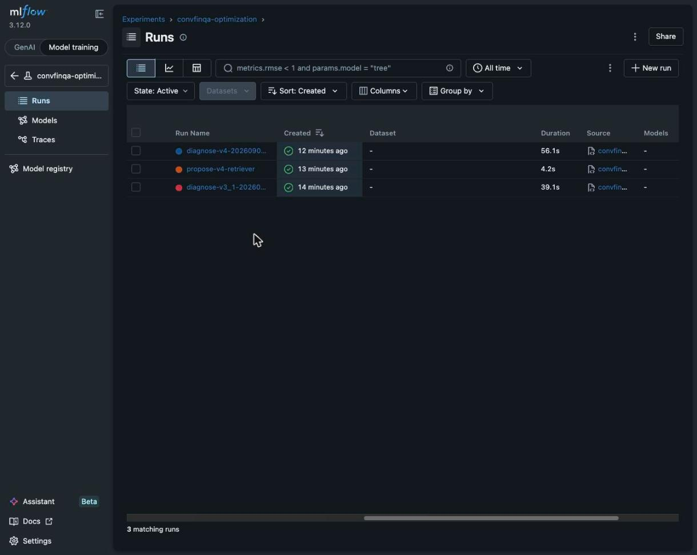
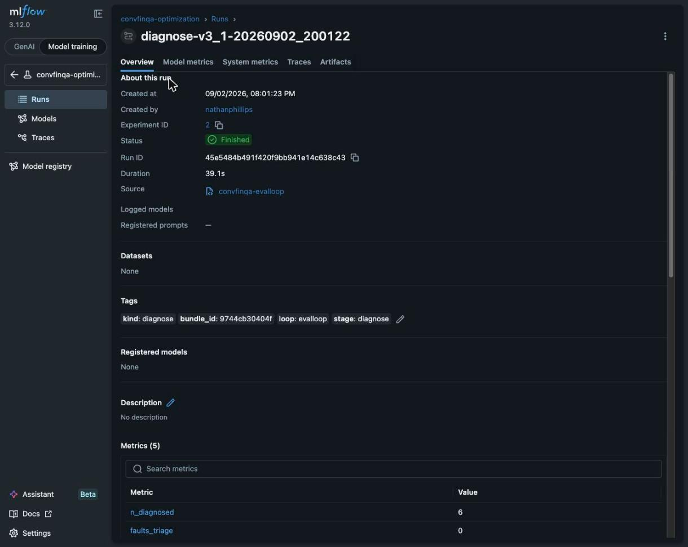
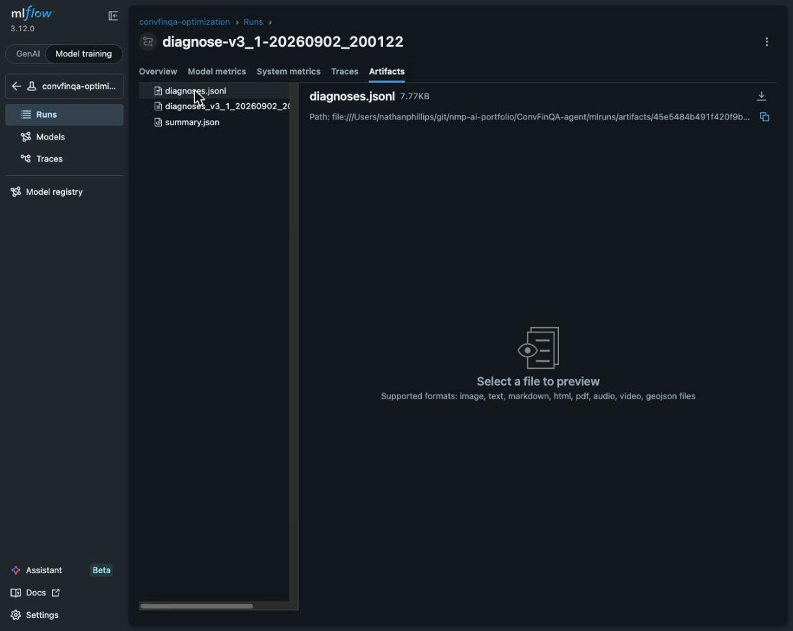
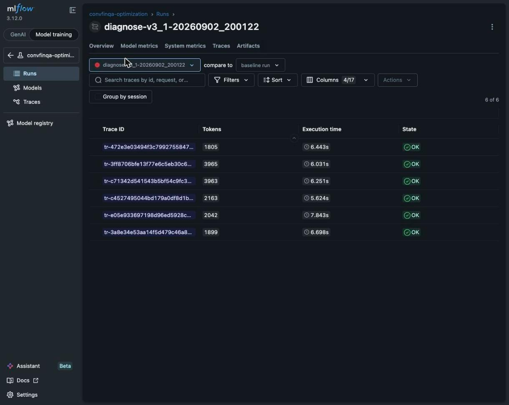
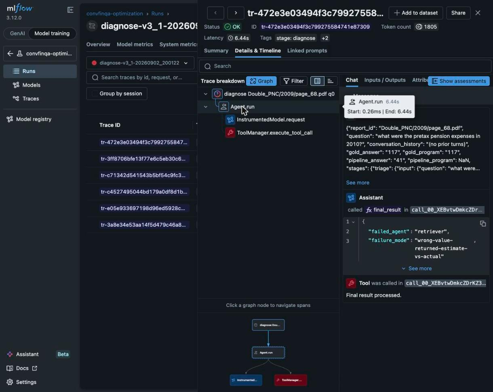
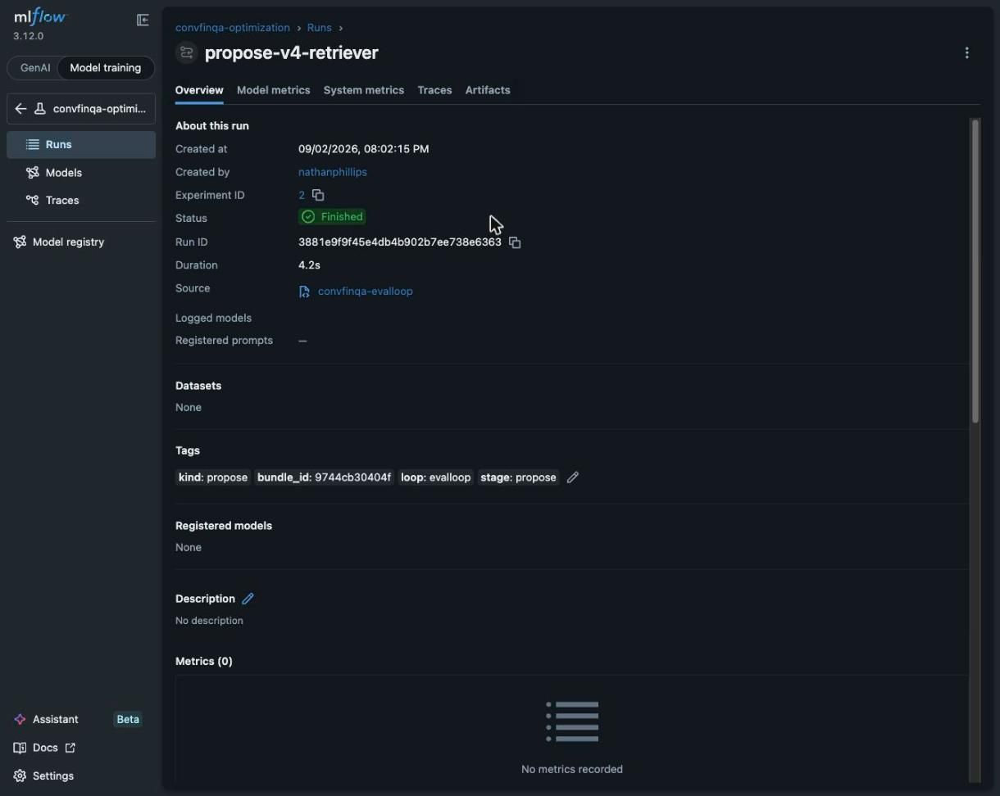
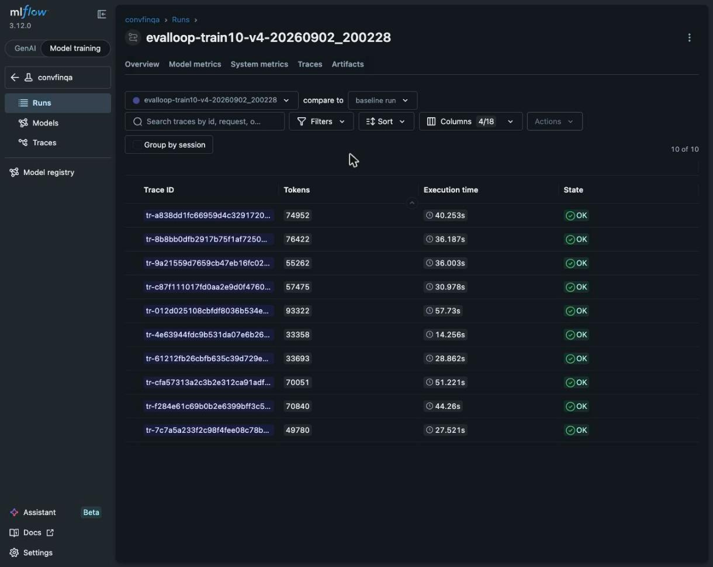
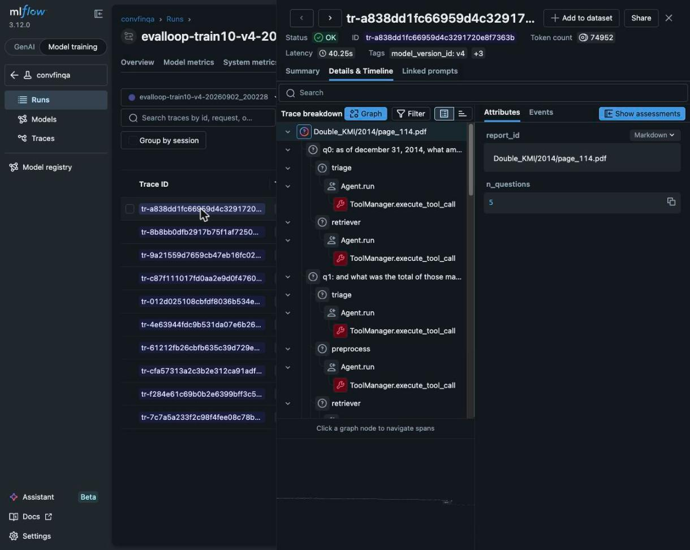

s05 · Review guide · 2026-09-02
The M2 optimisation loop ran one full cycle today: it diagnosed v3_1's failures, changed one subagent's prompt, and promoted the result. Every step left a reviewable record. This page walks the six stations — with the actual MLflow screens — so you can audit the cycle end to end, or any future one.
01 · Start here
Teacher work logs to its own MLflow experiment so it never interleaves with eval history
(convfinqa holds the eval runs). One optimisation cycle leaves exactly this shape:
a diagnose-<version> run per diagnosis pass and a propose-<new>-<agent>
run per challenger written. Three runs = one full cycle plus the follow-up diagnosis of the challenger.

diagnose-v3_1 (39s — 6 teacher calls) →
propose-v4-retriever (4s — one prompt-writer call) → diagnose-v4 (56s — 7 calls,
scoring the challenger's remaining failures). The run name alone tells you what happened and to which version.
02 · The verdicts
Open diagnose-v3_1-…. The Overview tab is the summary of record: tags say what
kind of run it is (kind: diagnose, stage: diagnose), params say which CSV it read,
and the metrics are the per-agent fault counts the target decision is made from.

n_diagnosed 6, then faults_triage 0 ·
faults_preprocess 1 · faults_retriever 3 · faults_calculator 2. The max is the target —
retriever. That single number is why v4 touches only the retriever prompt.

diagnoses.jsonl (one verdict per case —
this exact filename is also what later teacher runs read back as memory), a timestamped copy, and
summary.json (counts + chosen target). The same files are committed in the repo under
evaluation/diagnostics/evalloop/, so the record survives without the tracking server.
From diagnoses_v3_1_20260902_200122.jsonl — the HIG case, verbatim:
{
"failed_agent": "retriever",
"failure_mode": "wrong-value-returned",
"what_went_wrong": "The triage correctly classified this as a 'number' lookup. The retriever
located the correct operating lease obligation (42.0) but then fabricated a subtraction of
'approximately $2 million' sublease income to produce 40.0. … The retriever introduced an
unrequested computation and returned a value not present in the report.",
"evidence": "retriever output: 'In 2017, the operating lease commitment is 42.0. … So net =
42.0 - 2 = 40.0.' — a subtraction the gold program does not call for; gold answer is 42.",
"proposed_rule": "When the turn type is 'number', return the value as printed in the source
cell; do not perform any arithmetic or adjustment unless the instruction explicitly
directs an operation…",
"gold_suspect": false,
"confidence": 0.9,
"report_id": "Double_HIG/2016/page_253.pdf", "turn_index": 0, "version": "v3_1"
}| Report · first wrong turn | Failed agent | Failure mode | Conf. |
|---|---|---|---|
Double_HIG/2016 q0 | retriever | wrong-value-returned (invented a subtraction on a number lookup) | 0.90 |
Double_FRT/2007 q0 | retriever | wrong-row-wrong-year-values | 0.90 |
Double_PNC/2009 q0 | retriever | wrong-value-returned (estimate vs actual) | 0.70 |
Double_KIM/2010 q3 | calculator | missing-computation-wrong-scale | 0.85 |
Double_CMCSA/2015 q0 | calculator | missing-percentage-format | 0.85 |
Double_MMM/2007 q0 | preprocess | computed an increase the document reports directly | 0.90 |
Only first wrong turns are diagnosed — a wrong q3 that inherited a wrong q2 is cascade, not signal. That is why 16 wrong questions collapse to 6 diagnosable cases.
03 · The teacher is observable too
The run's Traces tab lists one trace per diagnosed case
(diagnose <report> q<n>). Open one and the Chat view shows exactly what the teacher
was given and what it concluded — so when you doubt a verdict, you audit the reasoning, not just the label.


117, the
pipeline's 41, all four stage captures); the Assistant returns the structured
Diagnosis — failed_agent: "retriever",
failure_mode: "wrong-value-returned-estimate-vs-actual". This is the trace to read when you
disagree with an attribution.
04 · One agent changes
propose-v4-retriever took the three retriever verdicts, merged their proposed rules through a
prompt-writer call (deduped against the current prompt, generalised — no company names), and wrote
src/convfinqa/prompts/v4.py. Its proposal.json artifact records the rules; the
registry entry records the hypothesis.

kind: propose · stage: propose.# src/convfinqa/prompts/v4.py — generated, never hand-edited
"""Generated by convfinqa.evalloop.teacher — do not hand-edit.
Targeted challenger for v3_1: only the retriever prompt changes."""
from convfinqa.prompts.v3_1 import (
TRIAGE_PROMPT, # ← unchanged, imported
PREPROCESS_PROMPT, # ← unchanged, imported
CALCULATOR_PROMPT, # ← unchanged, imported
)
from convfinqa.prompts.v3_1 import RETRIEVER_PROMPT as _BASE
RETRIEVER_PROMPT = _BASE + """
## Targeted rules (v4, teacher-diagnosed)
- When turn_type is "number", return the value as printed in the source cell without any
arithmetic or adjustment unless the instruction explicitly directs an operation; …
- When a question asks for a metric across multiple periods … map each sub-question to its
own year's cell rather than reusing one period value; …
- When a sentence pairs an estimate … verify which year the question targets and return the
value explicitly tied to that year, not the estimate, …
"""Because the other three prompts are imports, a reviewer can prove at a glance that exactly one subagent changed — which is what makes the challenger's result attributable.
05 · Did it work?
The v4 eval run lives in the convfinqa experiment like any other (same 10 reports, same 44
questions, fully traced). Its Traces tab is where you check the fix behaving — open a report the
retriever used to get wrong and read the retriever span.

evalloop-train10-v4-… → Traces: one trace per report, 10 of 10, tagged model_version_id: v4.
$ convfinqa-evalloop gate-targeted --target-agent retriever … --promote
{
"baseline_target_faults": 3, ← retriever faults under v3_1
"candidate_target_faults": 2, ← retriever faults under v4
"target_improved": true, ← rule 1: the targeted subagent got better
"overall_delta": 0.090909,
"overall_not_regressed": true, ← rule 2: overall must not get worse
"promotable_targeted": true,
"comparison": { "n_compared": 44, "pass_to_fail": 1, "fail_to_pass": 5,
"mcnemar_p": 0.21875 }
}Promotion is by subagent improvement, not raw overall accuracy — so a genuine retriever fix is never thrown away because a small shared set happened to tie overall. The full verdict lands on the registry history, which is the permanent record of why v4 is champion:
# evaluation/registry.json — history, last event (committed to git)
{
"event": "promote", "version": "v4", "previous_champion": "v3_1",
"actor": "evalloop-teacher", "forced": true,
"reason": "targeted (M2): retriever first-faults 3 → 2 on the shared reports;
overall Δ +9.09pp (5 fixed vs 1 broken); McNemar p=0.21875",
"comparison": { …full paired comparison, the 1 regression listed… }
}44 questions and p = 0.22 make this a recorded bet, not a proven win — the 200-question train pass is where a promotion earns a significant p. And "subagent accuracy" is teacher attribution (there is no per-stage gold), so the plan's κ ≥ 0.7 check against 30 hand labels remains the trust milestone.
06 · The loop remembers
Every diagnose run downloads previous runs' diagnoses.jsonl from MLflow and tells the teacher
"these rules were already proposed — extend, don't repeat." You can verify it worked on any run:
diagnose-v4's params show n_prior_diagnoses: 6. Past optimisation runs are therefore
not just history — they are input to the next cycle.
The second diagnosis already set up cycle 2: v4's remaining first-faults are
preprocess 3 · retriever 2 · calculator 1 · triage 1 → next target
preprocess, and one case (Double_PNC/2009) is flagged
gold_suspect — read its trace before letting it drive a rule.
| Check | Where | This cycle |
|---|---|---|
| Fault counts justify the target | diagnose run → Overview metrics | retriever 3/6 |
| Verdicts read sensibly (spot-check 2–3) | diagnose run → Traces → Chat | checked |
Any gold_suspect cases excluded from rules | summary.json / diagnoses file | none in v3_1 pass |
| Challenger changes exactly one agent | prompts/v4.py (imports prove it) | retriever only |
| Rules are general, not case-specific | propose run → proposal.json | 3 rules, no company names |
| Targeted gate: faults ↓ and overall Δ ≥ 0 | gate-targeted output / registry history | 3→2 · +9.09pp |
| Regressions inspected (what broke?) | registry history → comparison → regressions | 1 flip — next diagnosis input |
| Statistical honesty noted | McNemar p on the verdict | p=0.22 — small sample |
export MLFLOW_TRACKING_URI=http://127.0.0.1:5000
# 1 baseline eval (if not already run)
convfinqa-evalloop run --split train \
--version v4 --n-reports 10
# 2 diagnose its failures
convfinqa-evalloop diagnose \
--csv evaluation/predictions/evalloop/<run>.csv \
--version v4
# 3 challenger changing ONE agent
convfinqa-evalloop propose \
--diagnoses <diagnoses.jsonl> \
--base-version v4 --new-version v5
# 4 run challenger, diagnose it, gate
convfinqa-evalloop run --split train \
--version v5 --n-reports 10
convfinqa-evalloop diagnose --csv <v5.csv> --version v5
convfinqa-evalloop gate-targeted \
--target-agent preprocess … --promoteevaluation/diagnostics/evalloop/ — committed diagnosis filesevaluation/predictions/evalloop/ — committed run CSVssrc/convfinqa/prompts/v4.py — the generated challenger (never hand-edit)evaluation/registry.json — versions, hypotheses, promotion history with evidenceAt 200-question scale the cadence is the same, four times over: one cycle per subagent (triage → preprocess → retriever → calculator), test and deploy between each.